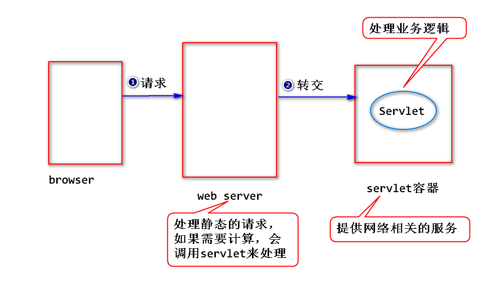
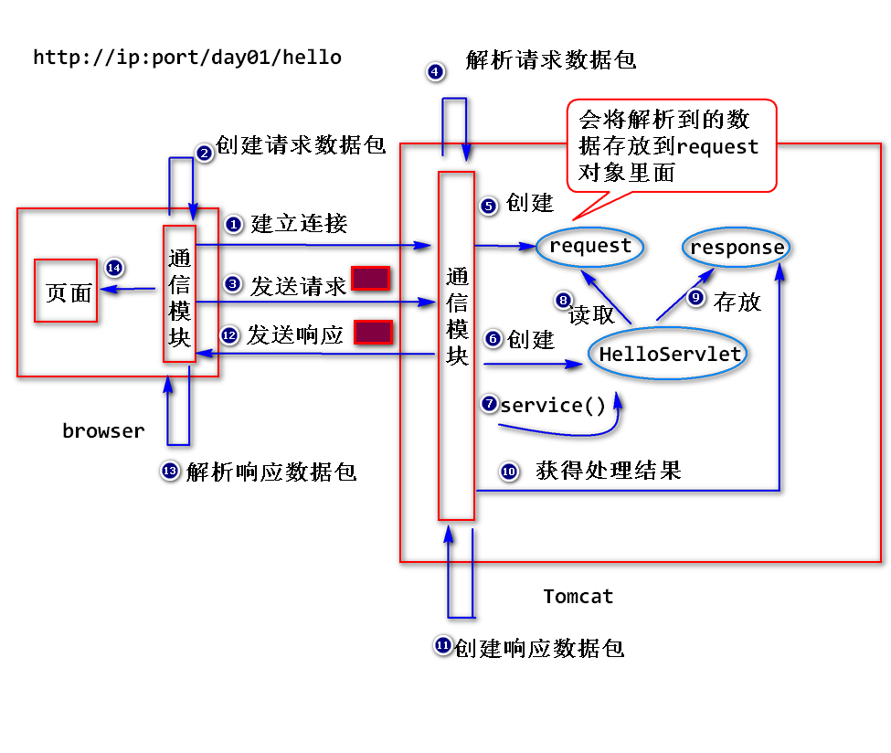
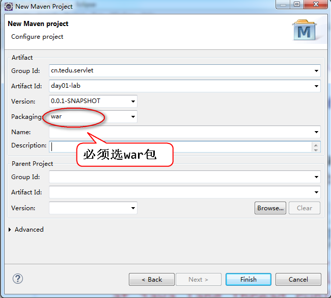
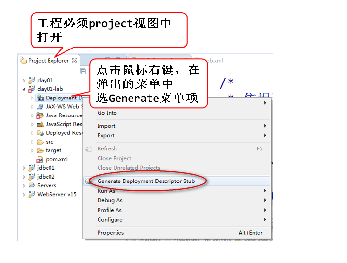
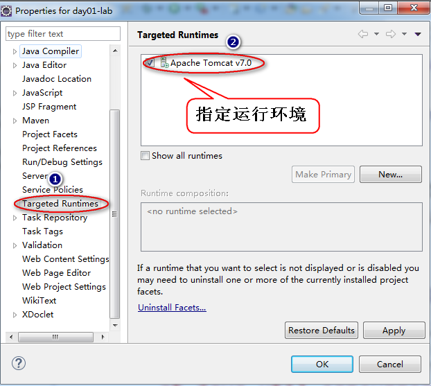
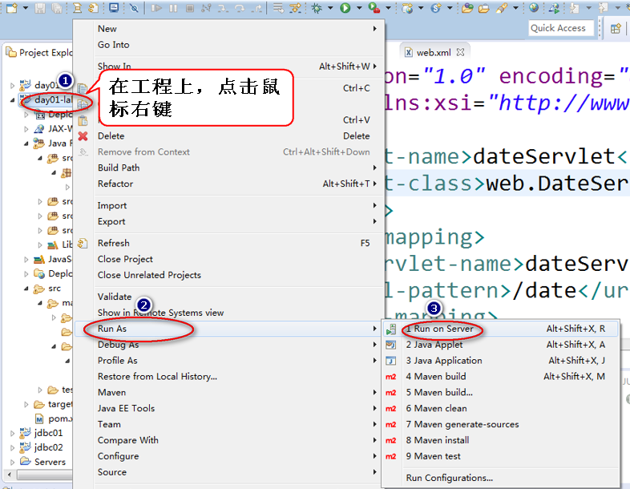
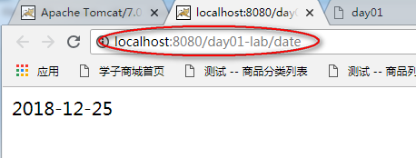

1.什么是Servlet?
sun公司制订的一种用来扩展web服务器功能的组件规范。
(1)用来扩展web服务器功能：
早期很多web服务器(比如apache,iis等)只能够处理静态资源的请求
(需要事先将html文档准备好)，不能够处理动态资源的请求(即需要通过
计算，生成html),所以需要扩展。
注：
早期使用CGI(Common Gateway Interface通用网关接口)程序来扩展
,因为CGI开发繁琐、并且不好移值，所以用得少了。
可以使用Servlet来扩展web服务器功能。
(2)组件规范:
a.什么是组件?
符合规范、实现部分功能，并且需要部署到相应的容器当中才能运行的
软件模块。
Servlet就是一个符合Servlet规范的组件，需要部署到Servlet容器
当中才能运行。
b.什么是容器?
符合规范，提供组件的运行环境的程序。
Servlet容器(比如Tomcat雄猫)为Servlet提供运行环境(主要是
提供网络相关的服务)。

2.如何写一个Servlet?
step1. 写一个java类，实现Servlet接口或者继承HttpServlet类。
注: 一般继承HttpServlet类更方便。
step2. 编译。 .java—>.class
step3. 打包。
建立一个具有如下结构的目录结构
appname (应用名，自定义)
WEB-INF
classes (放.class文件)
lib (放.jar文件,可选)
web.xml(部署描述文件,servlet3.0以上的版本可以不要)
step4.部署。
将step3创建好的整个文件夹拷贝到容器上。
注：
也可以将step3创建好的整个文件夹使用jar命令压缩成".war"为后缀
的文件，然后再拷贝。
step5.启动容器，访问Servlet。
打开浏览器，在地址栏输入
http://ip:port/appname/url-pattern
注:
url-pattern是一个字符串，在web.xml中设置。
3.安装Tomcat并且与Eclipse集成。
参考
http://doc.tedu.cn/tomcat/index.html
4.Servlet是如何运行的。
比如，在浏览器地址栏输入http://ip:port/day01/hello?number=1

step1. 浏览器依据ip和port，建立连接。
step2. 浏览器创建请求数据包并发送。
step3. 服务器解析请求数据包，并且将解析到的数据存放到request
对象里面，同时，创建response对象。
step4. 服务器创建Servlet对象，然后调用该对象的service方法。
注：
服务器会将request和response作为参数传递给service方法。
step5. 服务器从response对象中获取处理结果，然后创建响应数据包并
发送。
step6.浏览器解析响应数据包，然后依据解析到的数据生成相应的页面。
5.常见的错误
(1)404
含义:
404是一个状态码，表示服务器依据请求路径找不到对应的资源。
错误原因:
a.请求路径写错(没有按照http://ip:port/appname/url-pattern)来
写请求地址。
b.没有部署该应用或者部署失败。
(2)500
含义:
表示服务器处理出错。
错误原因:
a.没有严格按照规范来写代码。
比如没有继承HttpServlet,或者web.xml写错。
b.代码不严谨。
比如，对请求参数值没有做检查就做类型转换。
练习
##写一个Servlet(比如DateServlet),输出当前的系统日期
http://ip:port/day01-lab/date
返回 2018-12-25
提示
step1.创建一个maven工程，注意以下三点(分别如下图所示):



step2.在src/main/java下，添加一个java类(DateServlet),参考代码如下:
public class DateServlet extends HttpServlet{
@Override
protected void service(
HttpServletRequest request,
HttpServletResponse response)
throws ServletException,
IOException {
//获得系统时间
Date date = new Date();
//创建日期格式化对象
SimpleDateFormat sdf =
new SimpleDateFormat(
"yyyy-MM-dd");
//将日期格式化
String dateInfo =
sdf.format(date);
//设置响应头
response.setContentType("text/html");
PrintWriter out =
response.getWriter();
//输出日期
out.println(dateInfo);
out.close();
}
}
step3.在web.xml中，添加servlet的配置信息，参数配置如下:
<servlet>
<servlet-name>dateServlet</servlet-name>
<servlet-class>web.DateServlet</servlet-class>
</servlet>
<servlet-mapping>
<servlet-name>dateServlet</servlet-name>
<url-pattern>/date</url-pattern>
</servlet-mapping>
step4.运行，步骤如下图所示:

注：
eclipse会将servlet编译成.class文件，然后在servlet
容器上创建符合servlet规范的文件夹，将.class文件添加到
WEB-INF下。也就是说eclipse会帮我们部署整个应用。
step5.打开浏览器，在地址栏填写访问地址
